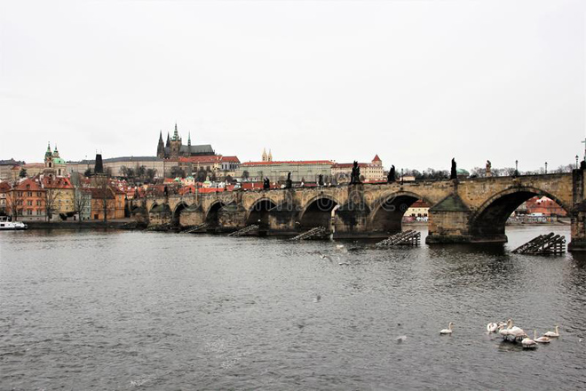
I had previously been to Prague in 1991 for a performance of Don Giovanni at the Estates Theatre (where it received its premiere back in 1787). This time, Seán and I went for a pre-Christmas break.
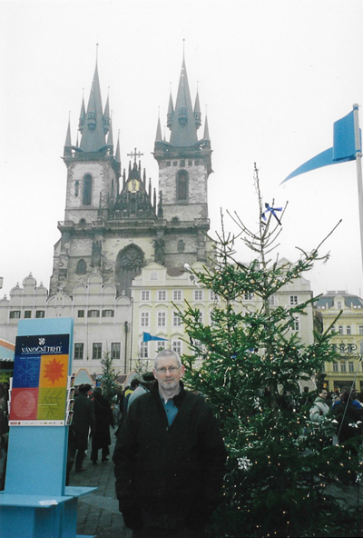
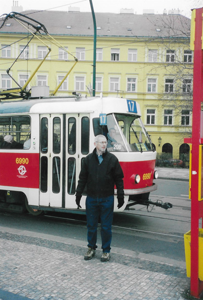
We were impressed with Prague's tram system which took us into Staromák (the Old Town Square), the historic square in the Old Town quarter. We saw the Prague Orloj, a medieval astronomical clock mounted on the Old Town Hall and then walked to Charles Bridge, a medieval stone arch bridge that crosses the Vltava (Moldau) river. Its construction started in 1357 under the auspices of King Charles IV, and finished in the early 15th century.
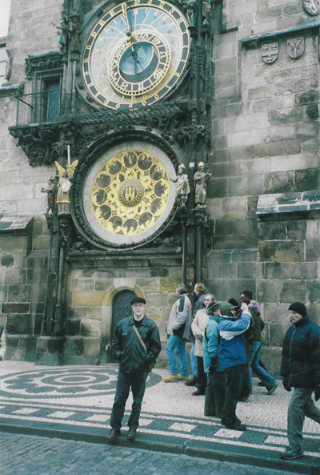
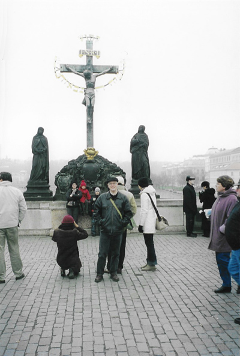
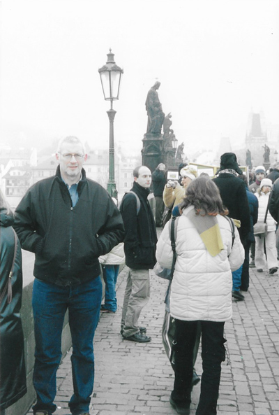
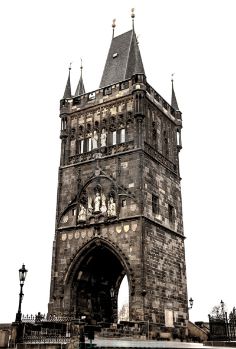
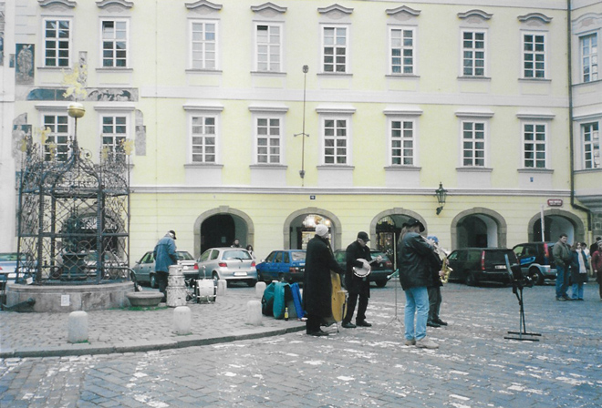
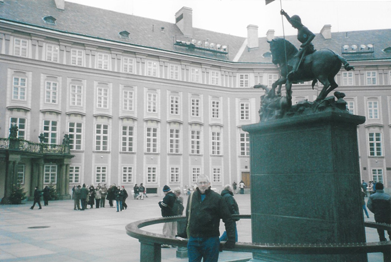
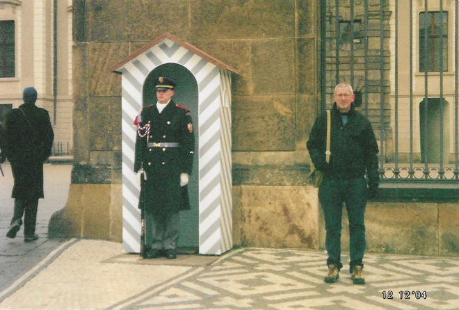
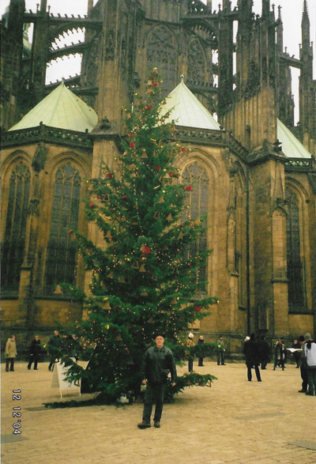
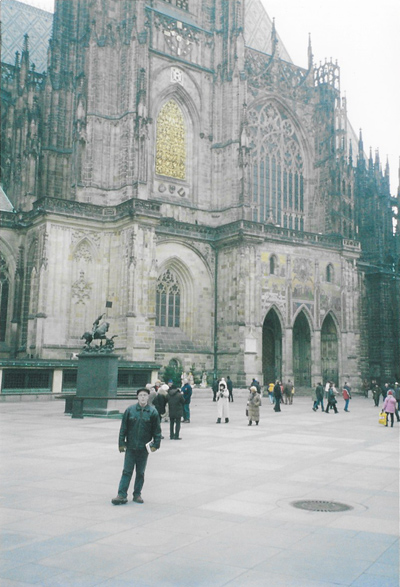
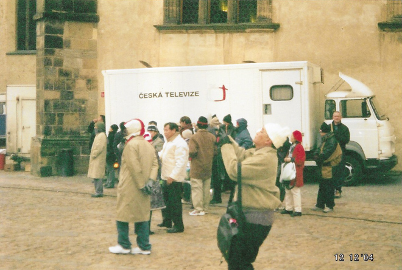
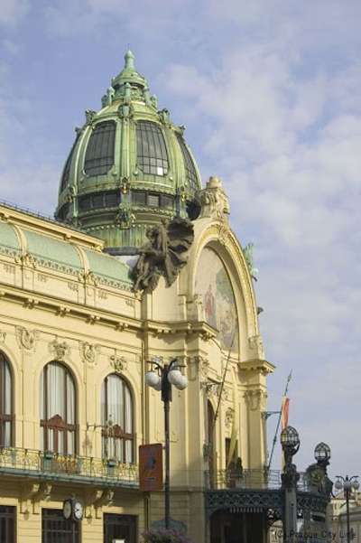
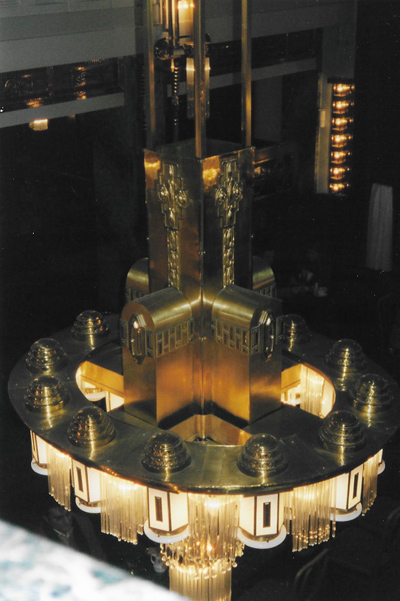
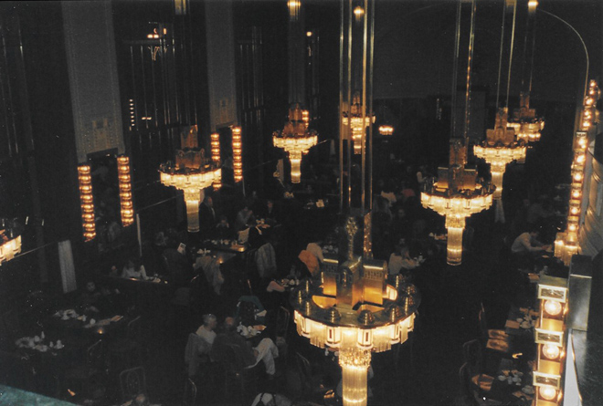
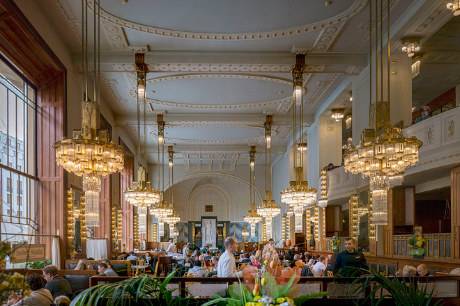
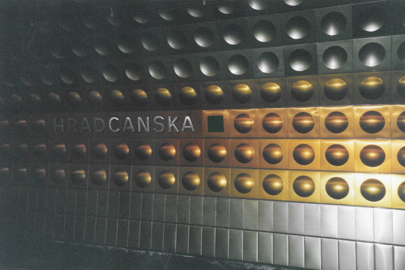